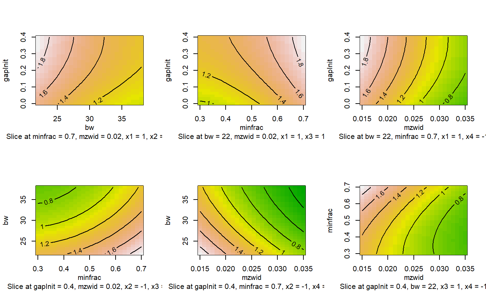
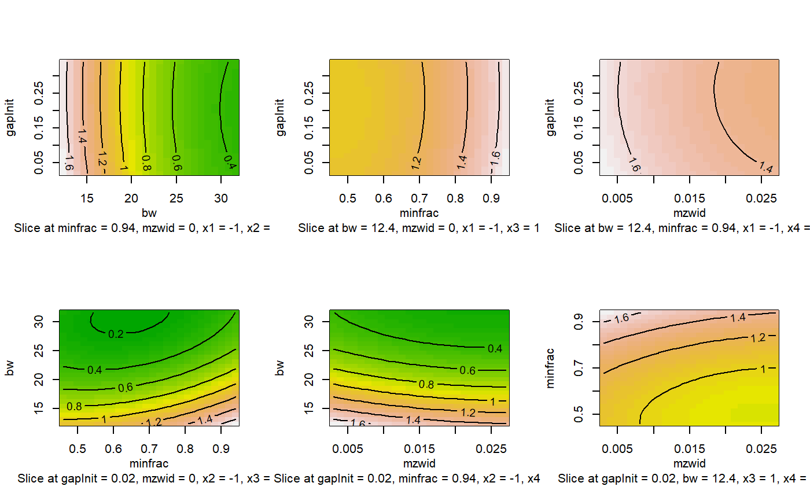
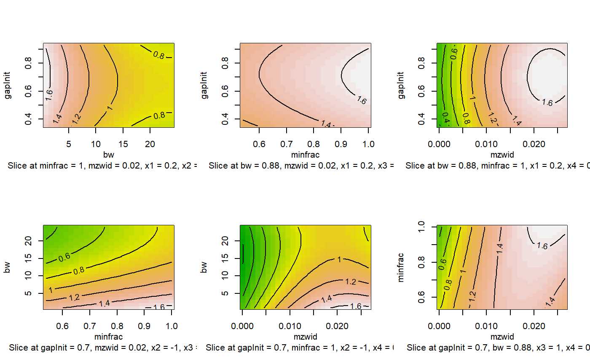
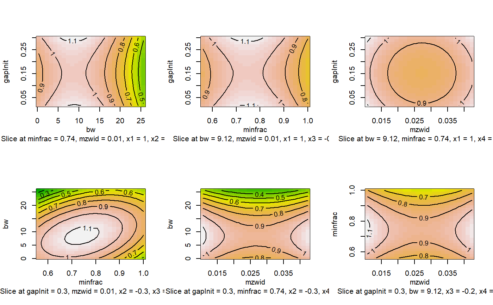

lcms_retcorgroup_optimization.RdThe function optimize parameters considering a set of samples for the retention time correction and grouping using the IPO Package.
lcms_retcorgroup_optimization(optimizedXcmsSetObject, retcorGroupParameters, nSlaves = 1, opt_path, subdir = "plot_ipo", plots = TRUE)
| optimizedXcmsSetObject | XCMS object conatining the |
|---|---|
| retcorGroupParameters | Parameters for retention time correction and optimization |
| nSlaves | Number of slaves the optimization process should spawn. |
| subdir | Folder where surface plots are save. If NULL they are displayed by the graphical device. |
| plots | Defines if plots should be generated (TRUE) or not (FALSE) in a subfolder called "plot_ipo"(default). |
a list with the optimization of parameters for retention time and grouping.
file_name_pp <- system.file("extdata", "lcms_resultPeakpicking.rds", package = "NIHSlcms") optimizedXcmsSetObject <-base::readRDS(file_name_pp)$best_settings$xset file_name_rcg <- system.file("extdata", "default_retcorgroup_params.rds", package = "NIHSlcms") default_retcorgroup_params <- base::readRDS(file_name_rcg) opt_path <- system.file("extdata", package = "NIHSlcms") resultRetcorGroup <- lcms_retcorgroup_optimization(optimizedXcmsSetObject, default_retcorgroup_params, opt_path = opt_path, subdir = NULL)#> Performing retention time and grouping #> parameter optimization. This will take some time...print(resultRetcorGroup)#> [[1]] #> [[1]]$params #> [[1]]$params$to_optimize #> [[1]]$params$to_optimize$gapInit #> [1] 0.0 0.4 #> #> [[1]]$params$to_optimize$bw #> [1] 22 38 #> #> [[1]]$params$to_optimize$minfrac #> [1] 0.3 0.7 #> #> [[1]]$params$to_optimize$mzwid #> [1] 0.015 0.035 #> #> #> [[1]]$params$no_optimization #> [[1]]$params$no_optimization$distFunc #> [1] "cor_opt" #> #> [[1]]$params$no_optimization$gapExtend #> [1] 2.7 #> #> [[1]]$params$no_optimization$profStep #> [1] 1 #> #> [[1]]$params$no_optimization$plottype #> [1] "none" #> #> [[1]]$params$no_optimization$response #> [1] 1 #> #> [[1]]$params$no_optimization$factorDiag #> [1] 2 #> #> [[1]]$params$no_optimization$factorGap #> [1] 1 #> #> [[1]]$params$no_optimization$localAlignment #> [1] 0 #> #> [[1]]$params$no_optimization$retcorMethod #> [1] "obiwarp" #> #> [[1]]$params$no_optimization$minsamp #> [1] 1 #> #> [[1]]$params$no_optimization$max #> [1] 50 #> #> [[1]]$params$no_optimization$center #> [1] 4 #> #> #> #> [[1]]$design #> run.order std.order gapInit bw minfrac mzwid Block #> 1 1 1 0.0 22 0.3 0.015 1 #> 2 2 2 0.4 22 0.3 0.015 1 #> 3 3 3 0.0 38 0.3 0.015 1 #> 4 4 4 0.4 38 0.3 0.015 1 #> 5 5 5 0.0 22 0.7 0.015 1 #> 6 6 6 0.4 22 0.7 0.015 1 #> 7 7 7 0.0 38 0.7 0.015 1 #> 8 8 8 0.4 38 0.7 0.015 1 #> 9 9 9 0.0 22 0.3 0.035 1 #> 10 10 10 0.4 22 0.3 0.035 1 #> 11 11 11 0.0 38 0.3 0.035 1 #> 12 12 12 0.4 38 0.3 0.035 1 #> 13 13 13 0.0 22 0.7 0.035 1 #> 14 14 14 0.4 22 0.7 0.035 1 #> 15 15 15 0.0 38 0.7 0.035 1 #> 16 16 16 0.4 38 0.7 0.035 1 #> 17 17 17 0.2 30 0.5 0.025 1 #> 18 1 1 0.0 30 0.5 0.025 2 #> 19 2 2 0.4 30 0.5 0.025 2 #> 20 3 3 0.2 22 0.5 0.025 2 #> 21 4 4 0.2 38 0.5 0.025 2 #> 22 5 5 0.2 30 0.3 0.025 2 #> 23 6 6 0.2 30 0.7 0.025 2 #> 24 7 7 0.2 30 0.5 0.015 2 #> 25 8 8 0.2 30 0.5 0.035 2 #> 26 9 9 0.2 30 0.5 0.025 2 #> #> Data are stored in coded form using these coding formulas ... #> x1 ~ (gapInit - 0.2)/0.2 #> x2 ~ (bw - 30)/8 #> x3 ~ (minfrac - 0.5)/0.2 #> x4 ~ (mzwid - 0.025)/0.01 #> #> [[1]]$response #> [[1]]$response[[1]] #> [[1]]$response[[1]]$exp_index #> [1] 1 #> #> [[1]]$response[[1]]$good_groups #> [1] 57 #> #> [[1]]$response[[1]]$bad_groups #> [1] 131 #> #> [[1]]$response[[1]]$GS #> [1] 24.80153 #> #> [[1]]$response[[1]]$RCS #> [1] 175.1148 #> #> [[1]]$response[[1]]$retcor_done #> [1] 1 #> #> #> [[1]]$response[[2]] #> [[1]]$response[[2]]$exp_index #> [1] 2 #> #> [[1]]$response[[2]]$good_groups #> [1] 57 #> #> [[1]]$response[[2]]$bad_groups #> [1] 131 #> #> [[1]]$response[[2]]$GS #> [1] 24.80153 #> #> [[1]]$response[[2]]$RCS #> [1] 174.3437 #> #> [[1]]$response[[2]]$retcor_done #> [1] 1 #> #> #> [[1]]$response[[3]] #> [[1]]$response[[3]]$exp_index #> [1] 3 #> #> [[1]]$response[[3]]$good_groups #> [1] 54 #> #> [[1]]$response[[3]]$bad_groups #> [1] 130 #> #> [[1]]$response[[3]]$GS #> [1] 22.43077 #> #> [[1]]$response[[3]]$RCS #> [1] 130.7157 #> #> [[1]]$response[[3]]$retcor_done #> [1] 1 #> #> #> [[1]]$response[[4]] #> [[1]]$response[[4]]$exp_index #> [1] 4 #> #> [[1]]$response[[4]]$good_groups #> [1] 54 #> #> [[1]]$response[[4]]$bad_groups #> [1] 130 #> #> [[1]]$response[[4]]$GS #> [1] 22.43077 #> #> [[1]]$response[[4]]$RCS #> [1] 130.4119 #> #> [[1]]$response[[4]]$retcor_done #> [1] 1 #> #> #> [[1]]$response[[5]] #> [[1]]$response[[5]]$exp_index #> [1] 5 #> #> [[1]]$response[[5]]$good_groups #> [1] 57 #> #> [[1]]$response[[5]]$bad_groups #> [1] 61 #> #> [[1]]$response[[5]]$GS #> [1] 53.2623 #> #> [[1]]$response[[5]]$RCS #> [1] 143.5765 #> #> [[1]]$response[[5]]$retcor_done #> [1] 1 #> #> #> [[1]]$response[[6]] #> [[1]]$response[[6]]$exp_index #> [1] 6 #> #> [[1]]$response[[6]]$good_groups #> [1] 57 #> #> [[1]]$response[[6]]$bad_groups #> [1] 61 #> #> [[1]]$response[[6]]$GS #> [1] 53.2623 #> #> [[1]]$response[[6]]$RCS #> [1] 143.3452 #> #> [[1]]$response[[6]]$retcor_done #> [1] 1 #> #> #> [[1]]$response[[7]] #> [[1]]$response[[7]]$exp_index #> [1] 7 #> #> [[1]]$response[[7]]$good_groups #> [1] 54 #> #> [[1]]$response[[7]]$bad_groups #> [1] 64 #> #> [[1]]$response[[7]]$GS #> [1] 45.5625 #> #> [[1]]$response[[7]]$RCS #> [1] 102.9149 #> #> [[1]]$response[[7]]$retcor_done #> [1] 1 #> #> #> [[1]]$response[[8]] #> [[1]]$response[[8]]$exp_index #> [1] 8 #> #> [[1]]$response[[8]]$good_groups #> [1] 54 #> #> [[1]]$response[[8]]$bad_groups #> [1] 64 #> #> [[1]]$response[[8]]$GS #> [1] 45.5625 #> #> [[1]]$response[[8]]$RCS #> [1] 102.857 #> #> [[1]]$response[[8]]$retcor_done #> [1] 1 #> #> #> [[1]]$response[[9]] #> [[1]]$response[[9]]$exp_index #> [1] 9 #> #> [[1]]$response[[9]]$good_groups #> [1] 56 #> #> [[1]]$response[[9]]$bad_groups #> [1] 132 #> #> [[1]]$response[[9]]$GS #> [1] 23.75758 #> #> [[1]]$response[[9]]$RCS #> [1] 162.4858 #> #> [[1]]$response[[9]]$retcor_done #> [1] 1 #> #> #> [[1]]$response[[10]] #> [[1]]$response[[10]]$exp_index #> [1] 10 #> #> [[1]]$response[[10]]$good_groups #> [1] 56 #> #> [[1]]$response[[10]]$bad_groups #> [1] 132 #> #> [[1]]$response[[10]]$GS #> [1] 23.75758 #> #> [[1]]$response[[10]]$RCS #> [1] 161.9933 #> #> [[1]]$response[[10]]$retcor_done #> [1] 1 #> #> #> [[1]]$response[[11]] #> [[1]]$response[[11]]$exp_index #> [1] 11 #> #> [[1]]$response[[11]]$good_groups #> [1] 51 #> #> [[1]]$response[[11]]$bad_groups #> [1] 131 #> #> [[1]]$response[[11]]$GS #> [1] 19.85496 #> #> [[1]]$response[[11]]$RCS #> [1] 116.3007 #> #> [[1]]$response[[11]]$retcor_done #> [1] 1 #> #> #> [[1]]$response[[12]] #> [[1]]$response[[12]]$exp_index #> [1] 12 #> #> [[1]]$response[[12]]$good_groups #> [1] 51 #> #> [[1]]$response[[12]]$bad_groups #> [1] 131 #> #> [[1]]$response[[12]]$GS #> [1] 19.85496 #> #> [[1]]$response[[12]]$RCS #> [1] 116.0723 #> #> [[1]]$response[[12]]$retcor_done #> [1] 1 #> #> #> [[1]]$response[[13]] #> [[1]]$response[[13]]$exp_index #> [1] 13 #> #> [[1]]$response[[13]]$good_groups #> [1] 56 #> #> [[1]]$response[[13]]$bad_groups #> [1] 66 #> #> [[1]]$response[[13]]$GS #> [1] 47.51515 #> #> [[1]]$response[[13]]$RCS #> [1] 129.8183 #> #> [[1]]$response[[13]]$retcor_done #> [1] 1 #> #> #> [[1]]$response[[14]] #> [[1]]$response[[14]]$exp_index #> [1] 14 #> #> [[1]]$response[[14]]$good_groups #> [1] 56 #> #> [[1]]$response[[14]]$bad_groups #> [1] 66 #> #> [[1]]$response[[14]]$GS #> [1] 47.51515 #> #> [[1]]$response[[14]]$RCS #> [1] 129.7191 #> #> [[1]]$response[[14]]$retcor_done #> [1] 1 #> #> #> [[1]]$response[[15]] #> [[1]]$response[[15]]$exp_index #> [1] 15 #> #> [[1]]$response[[15]]$good_groups #> [1] 51 #> #> [[1]]$response[[15]]$bad_groups #> [1] 70 #> #> [[1]]$response[[15]]$GS #> [1] 37.15714 #> #> [[1]]$response[[15]]$RCS #> [1] 90.32885 #> #> [[1]]$response[[15]]$retcor_done #> [1] 1 #> #> #> [[1]]$response[[16]] #> [[1]]$response[[16]]$exp_index #> [1] 16 #> #> [[1]]$response[[16]]$good_groups #> [1] 51 #> #> [[1]]$response[[16]]$bad_groups #> [1] 70 #> #> [[1]]$response[[16]]$GS #> [1] 37.15714 #> #> [[1]]$response[[16]]$RCS #> [1] 90.31174 #> #> [[1]]$response[[16]]$retcor_done #> [1] 1 #> #> #> [[1]]$response[[17]] #> [[1]]$response[[17]]$exp_index #> [1] 17 #> #> [[1]]$response[[17]]$good_groups #> [1] 51 #> #> [[1]]$response[[17]]$bad_groups #> [1] 133 #> #> [[1]]$response[[17]]$GS #> [1] 19.55639 #> #> [[1]]$response[[17]]$RCS #> [1] 132.449 #> #> [[1]]$response[[17]]$retcor_done #> [1] 1 #> #> #> [[1]]$response[[18]] #> [[1]]$response[[18]]$exp_index #> [1] 18 #> #> [[1]]$response[[18]]$good_groups #> [1] 51 #> #> [[1]]$response[[18]]$bad_groups #> [1] 133 #> #> [[1]]$response[[18]]$GS #> [1] 19.55639 #> #> [[1]]$response[[18]]$RCS #> [1] 132.7489 #> #> [[1]]$response[[18]]$retcor_done #> [1] 1 #> #> #> [[1]]$response[[19]] #> [[1]]$response[[19]]$exp_index #> [1] 19 #> #> [[1]]$response[[19]]$good_groups #> [1] 51 #> #> [[1]]$response[[19]]$bad_groups #> [1] 133 #> #> [[1]]$response[[19]]$GS #> [1] 19.55639 #> #> [[1]]$response[[19]]$RCS #> [1] 132.3673 #> #> [[1]]$response[[19]]$retcor_done #> [1] 1 #> #> #> [[1]]$response[[20]] #> [[1]]$response[[20]]$exp_index #> [1] 20 #> #> [[1]]$response[[20]]$good_groups #> [1] 57 #> #> [[1]]$response[[20]]$bad_groups #> [1] 131 #> #> [[1]]$response[[20]]$GS #> [1] 24.80153 #> #> [[1]]$response[[20]]$RCS #> [1] 167.8149 #> #> [[1]]$response[[20]]$retcor_done #> [1] 1 #> #> #> [[1]]$response[[21]] #> [[1]]$response[[21]]$exp_index #> [1] 21 #> #> [[1]]$response[[21]]$good_groups #> [1] 50 #> #> [[1]]$response[[21]]$bad_groups #> [1] 132 #> #> [[1]]$response[[21]]$GS #> [1] 18.93939 #> #> [[1]]$response[[21]]$RCS #> [1] 111.4103 #> #> [[1]]$response[[21]]$retcor_done #> [1] 1 #> #> #> [[1]]$response[[22]] #> [[1]]$response[[22]]$exp_index #> [1] 22 #> #> [[1]]$response[[22]]$good_groups #> [1] 51 #> #> [[1]]$response[[22]]$bad_groups #> [1] 133 #> #> [[1]]$response[[22]]$GS #> [1] 19.55639 #> #> [[1]]$response[[22]]$RCS #> [1] 132.449 #> #> [[1]]$response[[22]]$retcor_done #> [1] 1 #> #> #> [[1]]$response[[23]] #> [[1]]$response[[23]]$exp_index #> [1] 23 #> #> [[1]]$response[[23]]$good_groups #> [1] 51 #> #> [[1]]$response[[23]]$bad_groups #> [1] 66 #> #> [[1]]$response[[23]]$GS #> [1] 39.40909 #> #> [[1]]$response[[23]]$RCS #> [1] 104.9373 #> #> [[1]]$response[[23]]$retcor_done #> [1] 1 #> #> #> [[1]]$response[[24]] #> [[1]]$response[[24]]$exp_index #> [1] 24 #> #> [[1]]$response[[24]]$good_groups #> [1] 55 #> #> [[1]]$response[[24]]$bad_groups #> [1] 131 #> #> [[1]]$response[[24]]$GS #> [1] 23.0916 #> #> [[1]]$response[[24]]$RCS #> [1] 150.5751 #> #> [[1]]$response[[24]]$retcor_done #> [1] 1 #> #> #> [[1]]$response[[25]] #> [[1]]$response[[25]]$exp_index #> [1] 25 #> #> [[1]]$response[[25]]$good_groups #> [1] 52 #> #> [[1]]$response[[25]]$bad_groups #> [1] 133 #> #> [[1]]$response[[25]]$GS #> [1] 20.33083 #> #> [[1]]$response[[25]]$RCS #> [1] 135.4168 #> #> [[1]]$response[[25]]$retcor_done #> [1] 1 #> #> #> [[1]]$response[[26]] #> [[1]]$response[[26]]$exp_index #> [1] 26 #> #> [[1]]$response[[26]]$good_groups #> [1] 51 #> #> [[1]]$response[[26]]$bad_groups #> [1] 133 #> #> [[1]]$response[[26]]$GS #> [1] 19.55639 #> #> [[1]]$response[[26]]$RCS #> [1] 132.449 #> #> [[1]]$response[[26]]$retcor_done #> [1] 1 #> #> #> #> [[1]]$model #> #> Call: #> rsm(formula = resp ~ SO(x1, x2, x3, x4), data = design) #> #> Coefficients: #> (Intercept) FO(x1, x2, x3, x4)x1 FO(x1, x2, x3, x4)x2 #> 0.5267211 -0.0016921 -0.3482605 #> FO(x1, x2, x3, x4)x3 FO(x1, x2, x3, x4)x4 TWI(x1, x2, x3, x4)x1:x2 #> 0.1603797 -0.1415373 0.0007274 #> TWI(x1, x2, x3, x4)x1:x3 TWI(x1, x2, x3, x4)x1:x4 TWI(x1, x2, x3, x4)x2:x3 #> 0.0010247 0.0003884 -0.0278897 #> TWI(x1, x2, x3, x4)x2:x4 TWI(x1, x2, x3, x4)x3:x4 PQ(x1, x2, x3, x4)x1^2 #> -0.0163815 -0.0374612 -0.0145284 #> PQ(x1, x2, x3, x4)x2^2 PQ(x1, x2, x3, x4)x3^2 PQ(x1, x2, x3, x4)x4^2 #> 0.1360789 0.1111809 0.1713357 #> #> #> [[1]]$max_settings #> response x1 x2 x3 x4 #> [1,] 1.644497 -0.1 -1 1 -1 #> #> [[1]]$target_value #> [[1]]$target_value$exp_index #> [1] 1 #> #> [[1]]$target_value$good_groups #> [1] 57 #> #> [[1]]$target_value$bad_groups #> [1] 61 #> #> [[1]]$target_value$GS #> [1] 53.2623 #> #> [[1]]$target_value$RCS #> [1] 143.5472 #> #> [[1]]$target_value$retcor_done #> [1] 1 #> #> #> [[1]]$best_settings #> [[1]]$best_settings$gapInit #> [1] 0.18 #> #> [[1]]$best_settings$bw #> [1] 22 #> #> [[1]]$best_settings$minfrac #> [1] 0.7 #> #> [[1]]$best_settings$mzwid #> [1] 0.015 #> #> [[1]]$best_settings$distFunc #> [1] "cor_opt" #> #> [[1]]$best_settings$gapExtend #> [1] 2.7 #> #> [[1]]$best_settings$profStep #> [1] 1 #> #> [[1]]$best_settings$plottype #> [1] "none" #> #> [[1]]$best_settings$response #> [1] 1 #> #> [[1]]$best_settings$factorDiag #> [1] 2 #> #> [[1]]$best_settings$factorGap #> [1] 1 #> #> [[1]]$best_settings$localAlignment #> [1] 0 #> #> [[1]]$best_settings$retcorMethod #> [1] "obiwarp" #> #> [[1]]$best_settings$minsamp #> [1] 1 #> #> [[1]]$best_settings$max #> [1] 50 #> #> [[1]]$best_settings$center #> [1] 4 #> #> #> #> [[2]] #> [[2]]$params #> [[2]]$params$to_optimize #> [[2]]$params$to_optimize$gapInit #> [1] 0.02 0.34 #> #> [[2]]$params$to_optimize$bw #> [1] 12.4 31.6 #> #> [[2]]$params$to_optimize$minfrac #> [1] 0.46 0.94 #> #> [[2]]$params$to_optimize$mzwid #> [1] 0.003 0.027 #> #> #> [[2]]$params$no_optimization #> [[2]]$params$no_optimization$distFunc #> [1] "cor_opt" #> #> [[2]]$params$no_optimization$gapExtend #> [1] 2.7 #> #> [[2]]$params$no_optimization$profStep #> [1] 1 #> #> [[2]]$params$no_optimization$plottype #> [1] "none" #> #> [[2]]$params$no_optimization$response #> [1] 1 #> #> [[2]]$params$no_optimization$factorDiag #> [1] 2 #> #> [[2]]$params$no_optimization$factorGap #> [1] 1 #> #> [[2]]$params$no_optimization$localAlignment #> [1] 0 #> #> [[2]]$params$no_optimization$retcorMethod #> [1] "obiwarp" #> #> [[2]]$params$no_optimization$minsamp #> [1] 1 #> #> [[2]]$params$no_optimization$max #> [1] 50 #> #> [[2]]$params$no_optimization$center #> [1] 4 #> #> #> #> [[2]]$design #> run.order std.order gapInit bw minfrac mzwid Block #> 1 1 1 0.02 12.4 0.46 0.003 1 #> 2 2 2 0.34 12.4 0.46 0.003 1 #> 3 3 3 0.02 31.6 0.46 0.003 1 #> 4 4 4 0.34 31.6 0.46 0.003 1 #> 5 5 5 0.02 12.4 0.94 0.003 1 #> 6 6 6 0.34 12.4 0.94 0.003 1 #> 7 7 7 0.02 31.6 0.94 0.003 1 #> 8 8 8 0.34 31.6 0.94 0.003 1 #> 9 9 9 0.02 12.4 0.46 0.027 1 #> 10 10 10 0.34 12.4 0.46 0.027 1 #> 11 11 11 0.02 31.6 0.46 0.027 1 #> 12 12 12 0.34 31.6 0.46 0.027 1 #> 13 13 13 0.02 12.4 0.94 0.027 1 #> 14 14 14 0.34 12.4 0.94 0.027 1 #> 15 15 15 0.02 31.6 0.94 0.027 1 #> 16 16 16 0.34 31.6 0.94 0.027 1 #> 17 17 17 0.18 22.0 0.70 0.015 1 #> 18 1 1 0.02 22.0 0.70 0.015 2 #> 19 2 2 0.34 22.0 0.70 0.015 2 #> 20 3 3 0.18 12.4 0.70 0.015 2 #> 21 4 4 0.18 31.6 0.70 0.015 2 #> 22 5 5 0.18 22.0 0.46 0.015 2 #> 23 6 6 0.18 22.0 0.94 0.015 2 #> 24 7 7 0.18 22.0 0.70 0.003 2 #> 25 8 8 0.18 22.0 0.70 0.027 2 #> 26 9 9 0.18 22.0 0.70 0.015 2 #> #> Data are stored in coded form using these coding formulas ... #> x1 ~ (gapInit - 0.18)/0.16 #> x2 ~ (bw - 22)/9.6 #> x3 ~ (minfrac - 0.7)/0.24 #> x4 ~ (mzwid - 0.015)/0.012 #> #> [[2]]$response #> [[2]]$response[[1]] #> [[2]]$response[[1]]$exp_index #> [1] 1 #> #> [[2]]$response[[1]]$good_groups #> [1] 64 #> #> [[2]]$response[[1]]$bad_groups #> [1] 127 #> #> [[2]]$response[[1]]$GS #> [1] 32.25197 #> #> [[2]]$response[[1]]$RCS #> [1] 282.6341 #> #> [[2]]$response[[1]]$retcor_done #> [1] 1 #> #> #> [[2]]$response[[2]] #> [[2]]$response[[2]]$exp_index #> [1] 2 #> #> [[2]]$response[[2]]$good_groups #> [1] 64 #> #> [[2]]$response[[2]]$bad_groups #> [1] 125 #> #> [[2]]$response[[2]]$GS #> [1] 32.768 #> #> [[2]]$response[[2]]$RCS #> [1] 284.2137 #> #> [[2]]$response[[2]]$retcor_done #> [1] 1 #> #> #> [[2]]$response[[3]] #> [[2]]$response[[3]]$exp_index #> [1] 3 #> #> [[2]]$response[[3]]$good_groups #> [1] 53 #> #> [[2]]$response[[3]]$bad_groups #> [1] 129 #> #> [[2]]$response[[3]]$GS #> [1] 21.77519 #> #> [[2]]$response[[3]]$RCS #> [1] 155.114 #> #> [[2]]$response[[3]]$retcor_done #> [1] 1 #> #> #> [[2]]$response[[4]] #> [[2]]$response[[4]]$exp_index #> [1] 4 #> #> [[2]]$response[[4]]$good_groups #> [1] 53 #> #> [[2]]$response[[4]]$bad_groups #> [1] 129 #> #> [[2]]$response[[4]]$GS #> [1] 21.77519 #> #> [[2]]$response[[4]]$RCS #> [1] 154.5697 #> #> [[2]]$response[[4]]$retcor_done #> [1] 1 #> #> #> [[2]]$response[[5]] #> [[2]]$response[[5]]$exp_index #> [1] 5 #> #> [[2]]$response[[5]]$good_groups #> [1] 64 #> #> [[2]]$response[[5]]$bad_groups #> [1] 8 #> #> [[2]]$response[[5]]$GS #> [1] 512 #> #> [[2]]$response[[5]]$RCS #> [1] 245.5714 #> #> [[2]]$response[[5]]$retcor_done #> [1] 1 #> #> #> [[2]]$response[[6]] #> [[2]]$response[[6]]$exp_index #> [1] 6 #> #> [[2]]$response[[6]]$good_groups #> [1] 64 #> #> [[2]]$response[[6]]$bad_groups #> [1] 8 #> #> [[2]]$response[[6]]$GS #> [1] 512 #> #> [[2]]$response[[6]]$RCS #> [1] 230.3158 #> #> [[2]]$response[[6]]$retcor_done #> [1] 1 #> #> #> [[2]]$response[[7]] #> [[2]]$response[[7]]$exp_index #> [1] 7 #> #> [[2]]$response[[7]]$good_groups #> [1] 53 #> #> [[2]]$response[[7]]$bad_groups #> [1] 15 #> #> [[2]]$response[[7]]$GS #> [1] 187.2667 #> #> [[2]]$response[[7]]$RCS #> [1] 104.1905 #> #> [[2]]$response[[7]]$retcor_done #> [1] 1 #> #> #> [[2]]$response[[8]] #> [[2]]$response[[8]]$exp_index #> [1] 8 #> #> [[2]]$response[[8]]$good_groups #> [1] 53 #> #> [[2]]$response[[8]]$bad_groups #> [1] 15 #> #> [[2]]$response[[8]]$GS #> [1] 187.2667 #> #> [[2]]$response[[8]]$RCS #> [1] 104.3723 #> #> [[2]]$response[[8]]$retcor_done #> [1] 1 #> #> #> [[2]]$response[[9]] #> [[2]]$response[[9]]$exp_index #> [1] 9 #> #> [[2]]$response[[9]]$good_groups #> [1] 66 #> #> [[2]]$response[[9]]$bad_groups #> [1] 127 #> #> [[2]]$response[[9]]$GS #> [1] 34.29921 #> #> [[2]]$response[[9]]$RCS #> [1] 268.8018 #> #> [[2]]$response[[9]]$retcor_done #> [1] 1 #> #> #> [[2]]$response[[10]] #> [[2]]$response[[10]]$exp_index #> [1] 10 #> #> [[2]]$response[[10]]$good_groups #> [1] 66 #> #> [[2]]$response[[10]]$bad_groups #> [1] 126 #> #> [[2]]$response[[10]]$GS #> [1] 34.57143 #> #> [[2]]$response[[10]]$RCS #> [1] 265.7052 #> #> [[2]]$response[[10]]$retcor_done #> [1] 1 #> #> #> [[2]]$response[[11]] #> [[2]]$response[[11]]$exp_index #> [1] 11 #> #> [[2]]$response[[11]]$good_groups #> [1] 55 #> #> [[2]]$response[[11]]$bad_groups #> [1] 130 #> #> [[2]]$response[[11]]$GS #> [1] 23.26923 #> #> [[2]]$response[[11]]$RCS #> [1] 135.7976 #> #> [[2]]$response[[11]]$retcor_done #> [1] 1 #> #> #> [[2]]$response[[12]] #> [[2]]$response[[12]]$exp_index #> [1] 12 #> #> [[2]]$response[[12]]$good_groups #> [1] 55 #> #> [[2]]$response[[12]]$bad_groups #> [1] 130 #> #> [[2]]$response[[12]]$GS #> [1] 23.26923 #> #> [[2]]$response[[12]]$RCS #> [1] 135.4745 #> #> [[2]]$response[[12]]$retcor_done #> [1] 1 #> #> #> [[2]]$response[[13]] #> [[2]]$response[[13]]$exp_index #> [1] 13 #> #> [[2]]$response[[13]]$good_groups #> [1] 66 #> #> [[2]]$response[[13]]$bad_groups #> [1] 11 #> #> [[2]]$response[[13]]$GS #> [1] 396 #> #> [[2]]$response[[13]]$RCS #> [1] 215.3677 #> #> [[2]]$response[[13]]$retcor_done #> [1] 1 #> #> #> [[2]]$response[[14]] #> [[2]]$response[[14]]$exp_index #> [1] 14 #> #> [[2]]$response[[14]]$good_groups #> [1] 66 #> #> [[2]]$response[[14]]$bad_groups #> [1] 11 #> #> [[2]]$response[[14]]$GS #> [1] 396 #> #> [[2]]$response[[14]]$RCS #> [1] 203.5797 #> #> [[2]]$response[[14]]$retcor_done #> [1] 1 #> #> #> [[2]]$response[[15]] #> [[2]]$response[[15]]$exp_index #> [1] 15 #> #> [[2]]$response[[15]]$good_groups #> [1] 55 #> #> [[2]]$response[[15]]$bad_groups #> [1] 18 #> #> [[2]]$response[[15]]$GS #> [1] 168.0556 #> #> [[2]]$response[[15]]$RCS #> [1] 100.0684 #> #> [[2]]$response[[15]]$retcor_done #> [1] 1 #> #> #> [[2]]$response[[16]] #> [[2]]$response[[16]]$exp_index #> [1] 16 #> #> [[2]]$response[[16]]$good_groups #> [1] 55 #> #> [[2]]$response[[16]]$bad_groups #> [1] 18 #> #> [[2]]$response[[16]]$GS #> [1] 168.0556 #> #> [[2]]$response[[16]]$RCS #> [1] 100.0484 #> #> [[2]]$response[[16]]$retcor_done #> [1] 1 #> #> #> [[2]]$response[[17]] #> [[2]]$response[[17]]$exp_index #> [1] 17 #> #> [[2]]$response[[17]]$good_groups #> [1] 57 #> #> [[2]]$response[[17]]$bad_groups #> [1] 61 #> #> [[2]]$response[[17]]$GS #> [1] 53.2623 #> #> [[2]]$response[[17]]$RCS #> [1] 143.5472 #> #> [[2]]$response[[17]]$retcor_done #> [1] 1 #> #> #> [[2]]$response[[18]] #> [[2]]$response[[18]]$exp_index #> [1] 18 #> #> [[2]]$response[[18]]$good_groups #> [1] 57 #> #> [[2]]$response[[18]]$bad_groups #> [1] 61 #> #> [[2]]$response[[18]]$GS #> [1] 53.2623 #> #> [[2]]$response[[18]]$RCS #> [1] 143.5765 #> #> [[2]]$response[[18]]$retcor_done #> [1] 1 #> #> #> [[2]]$response[[19]] #> [[2]]$response[[19]]$exp_index #> [1] 19 #> #> [[2]]$response[[19]]$good_groups #> [1] 57 #> #> [[2]]$response[[19]]$bad_groups #> [1] 61 #> #> [[2]]$response[[19]]$GS #> [1] 53.2623 #> #> [[2]]$response[[19]]$RCS #> [1] 143.3753 #> #> [[2]]$response[[19]]$retcor_done #> [1] 1 #> #> #> [[2]]$response[[20]] #> [[2]]$response[[20]]$exp_index #> [1] 20 #> #> [[2]]$response[[20]]$good_groups #> [1] 67 #> #> [[2]]$response[[20]]$bad_groups #> [1] 54 #> #> [[2]]$response[[20]]$GS #> [1] 83.12963 #> #> [[2]]$response[[20]]$RCS #> [1] 246.7794 #> #> [[2]]$response[[20]]$retcor_done #> [1] 1 #> #> #> [[2]]$response[[21]] #> [[2]]$response[[21]]$exp_index #> [1] 21 #> #> [[2]]$response[[21]]$good_groups #> [1] 55 #> #> [[2]]$response[[21]]$bad_groups #> [1] 63 #> #> [[2]]$response[[21]]$GS #> [1] 48.01587 #> #> [[2]]$response[[21]]$RCS #> [1] 115.2141 #> #> [[2]]$response[[21]]$retcor_done #> [1] 1 #> #> #> [[2]]$response[[22]] #> [[2]]$response[[22]]$exp_index #> [1] 22 #> #> [[2]]$response[[22]]$good_groups #> [1] 57 #> #> [[2]]$response[[22]]$bad_groups #> [1] 131 #> #> [[2]]$response[[22]]$GS #> [1] 24.80153 #> #> [[2]]$response[[22]]$RCS #> [1] 174.5313 #> #> [[2]]$response[[22]]$retcor_done #> [1] 1 #> #> #> [[2]]$response[[23]] #> [[2]]$response[[23]]$exp_index #> [1] 23 #> #> [[2]]$response[[23]]$good_groups #> [1] 57 #> #> [[2]]$response[[23]]$bad_groups #> [1] 17 #> #> [[2]]$response[[23]]$GS #> [1] 191.1176 #> #> [[2]]$response[[23]]$RCS #> [1] 120.2568 #> #> [[2]]$response[[23]]$retcor_done #> [1] 1 #> #> #> [[2]]$response[[24]] #> [[2]]$response[[24]]$exp_index #> [1] 24 #> #> [[2]]$response[[24]]$good_groups #> [1] 55 #> #> [[2]]$response[[24]]$bad_groups #> [1] 52 #> #> [[2]]$response[[24]]$GS #> [1] 58.17308 #> #> [[2]]$response[[24]]$RCS #> [1] 156.5123 #> #> [[2]]$response[[24]]$retcor_done #> [1] 1 #> #> #> [[2]]$response[[25]] #> [[2]]$response[[25]]$exp_index #> [1] 25 #> #> [[2]]$response[[25]]$good_groups #> [1] 57 #> #> [[2]]$response[[25]]$bad_groups #> [1] 63 #> #> [[2]]$response[[25]]$GS #> [1] 51.57143 #> #> [[2]]$response[[25]]$RCS #> [1] 139.8925 #> #> [[2]]$response[[25]]$retcor_done #> [1] 1 #> #> #> [[2]]$response[[26]] #> [[2]]$response[[26]]$exp_index #> [1] 26 #> #> [[2]]$response[[26]]$good_groups #> [1] 57 #> #> [[2]]$response[[26]]$bad_groups #> [1] 61 #> #> [[2]]$response[[26]]$GS #> [1] 53.2623 #> #> [[2]]$response[[26]]$RCS #> [1] 143.5472 #> #> [[2]]$response[[26]]$retcor_done #> [1] 1 #> #> #> #> [[2]]$model #> #> Call: #> rsm(formula = resp ~ SO(x1, x2, x3, x4), data = design) #> #> Coefficients: #> (Intercept) FO(x1, x2, x3, x4)x1 FO(x1, x2, x3, x4)x2 #> 0.2805874 -0.0087998 -0.4775360 #> FO(x1, x2, x3, x4)x3 FO(x1, x2, x3, x4)x4 TWI(x1, x2, x3, x4)x1:x2 #> 0.1491607 -0.0767003 0.0093527 #> TWI(x1, x2, x3, x4)x1:x3 TWI(x1, x2, x3, x4)x1:x4 TWI(x1, x2, x3, x4)x2:x3 #> -0.0084142 -0.0004347 -0.1237188 #> TWI(x1, x2, x3, x4)x2:x4 TWI(x1, x2, x3, x4)x3:x4 PQ(x1, x2, x3, x4)x1^2 #> 0.0389668 -0.0335274 0.0260620 #> PQ(x1, x2, x3, x4)x2^2 PQ(x1, x2, x3, x4)x3^2 PQ(x1, x2, x3, x4)x4^2 #> 0.2549084 0.1589134 0.0550106 #> #> #> [[2]]$max_settings #> response x1 x2 x3 x4 #> [1,] 1.701224 -1 -1 1 -1 #> #> [[2]]$target_value #> [[2]]$target_value$exp_index #> [1] 1 #> #> [[2]]$target_value$good_groups #> [1] 64 #> #> [[2]]$target_value$bad_groups #> [1] 8 #> #> [[2]]$target_value$GS #> [1] 512 #> #> [[2]]$target_value$RCS #> [1] 245.5714 #> #> [[2]]$target_value$retcor_done #> [1] 1 #> #> #> [[2]]$best_settings #> [[2]]$best_settings$gapInit #> [1] 0.02 #> #> [[2]]$best_settings$bw #> [1] 12.4 #> #> [[2]]$best_settings$minfrac #> [1] 0.94 #> #> [[2]]$best_settings$mzwid #> [1] 0.003 #> #> [[2]]$best_settings$distFunc #> [1] "cor_opt" #> #> [[2]]$best_settings$gapExtend #> [1] 2.7 #> #> [[2]]$best_settings$profStep #> [1] 1 #> #> [[2]]$best_settings$plottype #> [1] "none" #> #> [[2]]$best_settings$response #> [1] 1 #> #> [[2]]$best_settings$factorDiag #> [1] 2 #> #> [[2]]$best_settings$factorGap #> [1] 1 #> #> [[2]]$best_settings$localAlignment #> [1] 0 #> #> [[2]]$best_settings$retcorMethod #> [1] "obiwarp" #> #> [[2]]$best_settings$minsamp #> [1] 1 #> #> [[2]]$best_settings$max #> [1] 50 #> #> [[2]]$best_settings$center #> [1] 4 #> #> #> #> [[3]] #> [[3]]$params #> [[3]]$params$to_optimize #> [[3]]$params$to_optimize$gapInit #> [1] 0.000 0.352 #> #> [[3]]$params$to_optimize$bw #> [1] 0.88 23.92 #> #> [[3]]$params$to_optimize$minfrac #> [1] 0.54 1.00 #> #> [[3]]$params$to_optimize$mzwid #> [1] 0.0001 0.0265 #> #> #> [[3]]$params$no_optimization #> [[3]]$params$no_optimization$distFunc #> [1] "cor_opt" #> #> [[3]]$params$no_optimization$gapExtend #> [1] 2.7 #> #> [[3]]$params$no_optimization$profStep #> [1] 1 #> #> [[3]]$params$no_optimization$plottype #> [1] "none" #> #> [[3]]$params$no_optimization$response #> [1] 1 #> #> [[3]]$params$no_optimization$factorDiag #> [1] 2 #> #> [[3]]$params$no_optimization$factorGap #> [1] 1 #> #> [[3]]$params$no_optimization$localAlignment #> [1] 0 #> #> [[3]]$params$no_optimization$retcorMethod #> [1] "obiwarp" #> #> [[3]]$params$no_optimization$minsamp #> [1] 1 #> #> [[3]]$params$no_optimization$max #> [1] 50 #> #> [[3]]$params$no_optimization$center #> [1] 4 #> #> #> #> [[3]]$design #> run.order std.order gapInit bw minfrac mzwid Block #> 1 1 1 0.000 0.88 0.54 0.0001 1 #> 2 2 2 0.352 0.88 0.54 0.0001 1 #> 3 3 3 0.000 23.92 0.54 0.0001 1 #> 4 4 4 0.352 23.92 0.54 0.0001 1 #> 5 5 5 0.000 0.88 1.00 0.0001 1 #> 6 6 6 0.352 0.88 1.00 0.0001 1 #> 7 7 7 0.000 23.92 1.00 0.0001 1 #> 8 8 8 0.352 23.92 1.00 0.0001 1 #> 9 9 9 0.000 0.88 0.54 0.0265 1 #> 10 10 10 0.352 0.88 0.54 0.0265 1 #> 11 11 11 0.000 23.92 0.54 0.0265 1 #> 12 12 12 0.352 23.92 0.54 0.0265 1 #> 13 13 13 0.000 0.88 1.00 0.0265 1 #> 14 14 14 0.352 0.88 1.00 0.0265 1 #> 15 15 15 0.000 23.92 1.00 0.0265 1 #> 16 16 16 0.352 23.92 1.00 0.0265 1 #> 17 17 17 0.176 12.40 0.77 0.0133 1 #> 18 1 1 0.000 12.40 0.77 0.0133 2 #> 19 2 2 0.352 12.40 0.77 0.0133 2 #> 20 3 3 0.176 0.88 0.77 0.0133 2 #> 21 4 4 0.176 23.92 0.77 0.0133 2 #> 22 5 5 0.176 12.40 0.54 0.0133 2 #> 23 6 6 0.176 12.40 1.00 0.0133 2 #> 24 7 7 0.176 12.40 0.77 0.0001 2 #> 25 8 8 0.176 12.40 0.77 0.0265 2 #> 26 9 9 0.176 12.40 0.77 0.0133 2 #> #> Data are stored in coded form using these coding formulas ... #> x1 ~ (gapInit - 0.176)/0.176 #> x2 ~ (bw - 12.4)/11.52 #> x3 ~ (minfrac - 0.77)/0.23 #> x4 ~ (mzwid - 0.0133)/0.0132 #> #> [[3]]$response #> [[3]]$response[[1]] #> [[3]]$response[[1]]$exp_index #> [1] 1 #> #> [[3]]$response[[1]]$good_groups #> [1] 2 #> #> [[3]]$response[[1]]$bad_groups #> [1] 19 #> #> [[3]]$response[[1]]$GS #> [1] 0.2105263 #> #> [[3]]$response[[1]]$RCS #> [1] 739.7296 #> #> [[3]]$response[[1]]$retcor_done #> [1] 1 #> #> #> [[3]]$response[[2]] #> [[3]]$response[[2]]$exp_index #> [1] 2 #> #> [[3]]$response[[2]]$good_groups #> [1] 2 #> #> [[3]]$response[[2]]$bad_groups #> [1] 18 #> #> [[3]]$response[[2]]$GS #> [1] 0.2222222 #> #> [[3]]$response[[2]]$RCS #> [1] 745.0332 #> #> [[3]]$response[[2]]$retcor_done #> [1] 1 #> #> #> [[3]]$response[[3]] #> [[3]]$response[[3]]$exp_index #> [1] 3 #> #> [[3]]$response[[3]]$good_groups #> [1] 1 #> #> [[3]]$response[[3]]$bad_groups #> [1] 24 #> #> [[3]]$response[[3]]$GS #> [1] 0.04166667 #> #> [[3]]$response[[3]]$RCS #> [1] 172.3108 #> #> [[3]]$response[[3]]$retcor_done #> [1] 1 #> #> #> [[3]]$response[[4]] #> [[3]]$response[[4]]$exp_index #> [1] 4 #> #> [[3]]$response[[4]]$good_groups #> [1] 1 #> #> [[3]]$response[[4]]$bad_groups #> [1] 24 #> #> [[3]]$response[[4]]$GS #> [1] 0.04166667 #> #> [[3]]$response[[4]]$RCS #> [1] 170.2306 #> #> [[3]]$response[[4]]$retcor_done #> [1] 1 #> #> #> [[3]]$response[[5]] #> [[3]]$response[[5]]$exp_index #> [1] 5 #> #> [[3]]$response[[5]]$good_groups #> [1] 2 #> #> [[3]]$response[[5]]$bad_groups #> [1] 0 #> #> [[3]]$response[[5]]$GS #> [1] 9 #> #> [[3]]$response[[5]]$RCS #> [1] 249.8987 #> #> [[3]]$response[[5]]$retcor_done #> [1] 1 #> #> #> [[3]]$response[[6]] #> [[3]]$response[[6]]$exp_index #> [1] 6 #> #> [[3]]$response[[6]]$good_groups #> [1] 2 #> #> [[3]]$response[[6]]$bad_groups #> [1] 0 #> #> [[3]]$response[[6]]$GS #> [1] 9 #> #> [[3]]$response[[6]]$RCS #> [1] 251.1759 #> #> [[3]]$response[[6]]$retcor_done #> [1] 1 #> #> #> [[3]]$response[[7]] #> [[3]]$response[[7]]$exp_index #> [1] 7 #> #> [[3]]$response[[7]]$good_groups #> [1] 1 #> #> [[3]]$response[[7]]$bad_groups #> [1] 1 #> #> [[3]]$response[[7]]$GS #> [1] 1 #> #> [[3]]$response[[7]]$RCS #> [1] 69.49319 #> #> [[3]]$response[[7]]$retcor_done #> [1] 1 #> #> #> [[3]]$response[[8]] #> [[3]]$response[[8]]$exp_index #> [1] 8 #> #> [[3]]$response[[8]]$good_groups #> [1] 1 #> #> [[3]]$response[[8]]$bad_groups #> [1] 1 #> #> [[3]]$response[[8]]$GS #> [1] 1 #> #> [[3]]$response[[8]]$RCS #> [1] 69.47299 #> #> [[3]]$response[[8]]$retcor_done #> [1] 1 #> #> #> [[3]]$response[[9]] #> [[3]]$response[[9]]$exp_index #> [1] 9 #> #> [[3]]$response[[9]]$good_groups #> [1] 64 #> #> [[3]]$response[[9]]$bad_groups #> [1] 38 #> #> [[3]]$response[[9]]$GS #> [1] 107.7895 #> #> [[3]]$response[[9]]$RCS #> [1] 620.5784 #> #> [[3]]$response[[9]]$retcor_done #> [1] 1 #> #> #> [[3]]$response[[10]] #> [[3]]$response[[10]]$exp_index #> [1] 10 #> #> [[3]]$response[[10]]$good_groups #> [1] 63 #> #> [[3]]$response[[10]]$bad_groups #> [1] 38 #> #> [[3]]$response[[10]]$GS #> [1] 104.4474 #> #> [[3]]$response[[10]]$RCS #> [1] 632.2545 #> #> [[3]]$response[[10]]$retcor_done #> [1] 1 #> #> #> [[3]]$response[[11]] #> [[3]]$response[[11]]$exp_index #> [1] 11 #> #> [[3]]$response[[11]]$good_groups #> [1] 57 #> #> [[3]]$response[[11]]$bad_groups #> [1] 64 #> #> [[3]]$response[[11]]$GS #> [1] 50.76562 #> #> [[3]]$response[[11]]$RCS #> [1] 131.0768 #> #> [[3]]$response[[11]]$retcor_done #> [1] 1 #> #> #> [[3]]$response[[12]] #> [[3]]$response[[12]]$exp_index #> [1] 12 #> #> [[3]]$response[[12]]$good_groups #> [1] 57 #> #> [[3]]$response[[12]]$bad_groups #> [1] 64 #> #> [[3]]$response[[12]]$GS #> [1] 50.76562 #> #> [[3]]$response[[12]]$RCS #> [1] 130.9655 #> #> [[3]]$response[[12]]$retcor_done #> [1] 1 #> #> #> [[3]]$response[[13]] #> [[3]]$response[[13]]$exp_index #> [1] 13 #> #> [[3]]$response[[13]]$good_groups #> [1] 64 #> #> [[3]]$response[[13]]$bad_groups #> [1] 1 #> #> [[3]]$response[[13]]$GS #> [1] 4096 #> #> [[3]]$response[[13]]$RCS #> [1] 593.4081 #> #> [[3]]$response[[13]]$retcor_done #> [1] 1 #> #> #> [[3]]$response[[14]] #> [[3]]$response[[14]]$exp_index #> [1] 14 #> #> [[3]]$response[[14]]$good_groups #> [1] 63 #> #> [[3]]$response[[14]]$bad_groups #> [1] 1 #> #> [[3]]$response[[14]]$GS #> [1] 3969 #> #> [[3]]$response[[14]]$RCS #> [1] 597.6145 #> #> [[3]]$response[[14]]$retcor_done #> [1] 1 #> #> #> [[3]]$response[[15]] #> [[3]]$response[[15]]$exp_index #> [1] 15 #> #> [[3]]$response[[15]]$good_groups #> [1] 57 #> #> [[3]]$response[[15]]$bad_groups #> [1] 18 #> #> [[3]]$response[[15]]$GS #> [1] 180.5 #> #> [[3]]$response[[15]]$RCS #> [1] 122.3839 #> #> [[3]]$response[[15]]$retcor_done #> [1] 1 #> #> #> [[3]]$response[[16]] #> [[3]]$response[[16]]$exp_index #> [1] 16 #> #> [[3]]$response[[16]]$good_groups #> [1] 57 #> #> [[3]]$response[[16]]$bad_groups #> [1] 18 #> #> [[3]]$response[[16]]$GS #> [1] 180.5 #> #> [[3]]$response[[16]]$RCS #> [1] 122.1899 #> #> [[3]]$response[[16]]$retcor_done #> [1] 1 #> #> #> [[3]]$response[[17]] #> [[3]]$response[[17]]$exp_index #> [1] 17 #> #> [[3]]$response[[17]]$good_groups #> [1] 66 #> #> [[3]]$response[[17]]$bad_groups #> [1] 9 #> #> [[3]]$response[[17]]$GS #> [1] 484 #> #> [[3]]$response[[17]]$RCS #> [1] 228.6919 #> #> [[3]]$response[[17]]$retcor_done #> [1] 1 #> #> #> [[3]]$response[[18]] #> [[3]]$response[[18]]$exp_index #> [1] 18 #> #> [[3]]$response[[18]]$good_groups #> [1] 66 #> #> [[3]]$response[[18]]$bad_groups #> [1] 9 #> #> [[3]]$response[[18]]$GS #> [1] 484 #> #> [[3]]$response[[18]]$RCS #> [1] 243.2843 #> #> [[3]]$response[[18]]$retcor_done #> [1] 1 #> #> #> [[3]]$response[[19]] #> [[3]]$response[[19]]$exp_index #> [1] 19 #> #> [[3]]$response[[19]]$good_groups #> [1] 66 #> #> [[3]]$response[[19]]$bad_groups #> [1] 9 #> #> [[3]]$response[[19]]$GS #> [1] 484 #> #> [[3]]$response[[19]]$RCS #> [1] 228.6803 #> #> [[3]]$response[[19]]$retcor_done #> [1] 1 #> #> #> [[3]]$response[[20]] #> [[3]]$response[[20]]$exp_index #> [1] 20 #> #> [[3]]$response[[20]]$good_groups #> [1] 63 #> #> [[3]]$response[[20]]$bad_groups #> [1] 1 #> #> [[3]]$response[[20]]$GS #> [1] 3969 #> #> [[3]]$response[[20]]$RCS #> [1] 597.6359 #> #> [[3]]$response[[20]]$retcor_done #> [1] 1 #> #> #> [[3]]$response[[21]] #> [[3]]$response[[21]]$exp_index #> [1] 21 #> #> [[3]]$response[[21]]$good_groups #> [1] 57 #> #> [[3]]$response[[21]]$bad_groups #> [1] 16 #> #> [[3]]$response[[21]]$GS #> [1] 203.0625 #> #> [[3]]$response[[21]]$RCS #> [1] 126.3725 #> #> [[3]]$response[[21]]$retcor_done #> [1] 1 #> #> #> [[3]]$response[[22]] #> [[3]]$response[[22]]$exp_index #> [1] 22 #> #> [[3]]$response[[22]]$good_groups #> [1] 66 #> #> [[3]]$response[[22]]$bad_groups #> [1] 54 #> #> [[3]]$response[[22]]$GS #> [1] 80.66667 #> #> [[3]]$response[[22]]$RCS #> [1] 253.3065 #> #> [[3]]$response[[22]]$retcor_done #> [1] 1 #> #> #> [[3]]$response[[23]] #> [[3]]$response[[23]]$exp_index #> [1] 23 #> #> [[3]]$response[[23]]$good_groups #> [1] 66 #> #> [[3]]$response[[23]]$bad_groups #> [1] 9 #> #> [[3]]$response[[23]]$GS #> [1] 484 #> #> [[3]]$response[[23]]$RCS #> [1] 228.6919 #> #> [[3]]$response[[23]]$retcor_done #> [1] 1 #> #> #> [[3]]$response[[24]] #> [[3]]$response[[24]]$exp_index #> [1] 24 #> #> [[3]]$response[[24]]$good_groups #> [1] 1 #> #> [[3]]$response[[24]]$bad_groups #> [1] 1 #> #> [[3]]$response[[24]]$GS #> [1] 1 #> #> [[3]]$response[[24]]$RCS #> [1] 69.47299 #> #> [[3]]$response[[24]]$retcor_done #> [1] 1 #> #> #> [[3]]$response[[25]] #> [[3]]$response[[25]]$exp_index #> [1] 25 #> #> [[3]]$response[[25]]$good_groups #> [1] 66 #> #> [[3]]$response[[25]]$bad_groups #> [1] 11 #> #> [[3]]$response[[25]]$GS #> [1] 396 #> #> [[3]]$response[[25]]$RCS #> [1] 211.9402 #> #> [[3]]$response[[25]]$retcor_done #> [1] 1 #> #> #> [[3]]$response[[26]] #> [[3]]$response[[26]]$exp_index #> [1] 26 #> #> [[3]]$response[[26]]$good_groups #> [1] 66 #> #> [[3]]$response[[26]]$bad_groups #> [1] 9 #> #> [[3]]$response[[26]]$GS #> [1] 484 #> #> [[3]]$response[[26]]$RCS #> [1] 228.6919 #> #> [[3]]$response[[26]]$retcor_done #> [1] 1 #> #> #> #> [[3]]$model #> #> Call: #> rsm(formula = resp ~ SO(x1, x2, x3, x4), data = design) #> #> Coefficients: #> (Intercept) FO(x1, x2, x3, x4)x1 FO(x1, x2, x3, x4)x2 #> 0.3972844 -0.0013192 -0.4790726 #> FO(x1, x2, x3, x4)x3 FO(x1, x2, x3, x4)x4 TWI(x1, x2, x3, x4)x1:x2 #> 0.0095853 0.1750677 -0.0003121 #> TWI(x1, x2, x3, x4)x1:x3 TWI(x1, x2, x3, x4)x1:x4 TWI(x1, x2, x3, x4)x2:x3 #> -0.0027677 -0.0009624 -0.0398294 #> TWI(x1, x2, x3, x4)x2:x4 TWI(x1, x2, x3, x4)x3:x4 PQ(x1, x2, x3, x4)x1^2 #> -0.1590456 0.2259929 -0.0471352 #> PQ(x1, x2, x3, x4)x2^2 PQ(x1, x2, x3, x4)x3^2 PQ(x1, x2, x3, x4)x4^2 #> 0.5305340 -0.0889443 -0.2578701 #> #> #> [[3]]$max_settings #> response x1 x2 x3 x4 #> [1,] 1.6696 -0.1 -1 1 1 #> #> [[3]]$target_value #> [[3]]$target_value$exp_index #> [1] 1 #> #> [[3]]$target_value$good_groups #> [1] 63 #> #> [[3]]$target_value$bad_groups #> [1] 1 #> #> [[3]]$target_value$GS #> [1] 3969 #> #> [[3]]$target_value$RCS #> [1] 597.6359 #> #> [[3]]$target_value$retcor_done #> [1] 1 #> #> #> [[3]]$best_settings #> [[3]]$best_settings$gapInit #> [1] 0.1584 #> #> [[3]]$best_settings$bw #> [1] 0.88 #> #> [[3]]$best_settings$minfrac #> [1] 1 #> #> [[3]]$best_settings$mzwid #> [1] 0.0265 #> #> [[3]]$best_settings$distFunc #> [1] "cor_opt" #> #> [[3]]$best_settings$gapExtend #> [1] 2.7 #> #> [[3]]$best_settings$profStep #> [1] 1 #> #> [[3]]$best_settings$plottype #> [1] "none" #> #> [[3]]$best_settings$response #> [1] 1 #> #> [[3]]$best_settings$factorDiag #> [1] 2 #> #> [[3]]$best_settings$factorGap #> [1] 1 #> #> [[3]]$best_settings$localAlignment #> [1] 0 #> #> [[3]]$best_settings$retcorMethod #> [1] "obiwarp" #> #> [[3]]$best_settings$minsamp #> [1] 1 #> #> [[3]]$best_settings$max #> [1] 50 #> #> [[3]]$best_settings$center #> [1] 4 #> #> #> #> [[4]] #> [[4]]$params #> [[4]]$params$to_optimize #> [[4]]$params$to_optimize$gapInit #> [1] 0.0176 0.2992 #> #> [[4]]$params$to_optimize$bw #> [1] 0.250 25.594 #> #> [[4]]$params$to_optimize$minfrac #> [1] 0.56 1.00 #> #> [[4]]$params$to_optimize$mzwid #> [1] 0.01066 0.04234 #> #> #> [[4]]$params$no_optimization #> [[4]]$params$no_optimization$distFunc #> [1] "cor_opt" #> #> [[4]]$params$no_optimization$gapExtend #> [1] 2.7 #> #> [[4]]$params$no_optimization$profStep #> [1] 1 #> #> [[4]]$params$no_optimization$plottype #> [1] "none" #> #> [[4]]$params$no_optimization$response #> [1] 1 #> #> [[4]]$params$no_optimization$factorDiag #> [1] 2 #> #> [[4]]$params$no_optimization$factorGap #> [1] 1 #> #> [[4]]$params$no_optimization$localAlignment #> [1] 0 #> #> [[4]]$params$no_optimization$retcorMethod #> [1] "obiwarp" #> #> [[4]]$params$no_optimization$minsamp #> [1] 1 #> #> [[4]]$params$no_optimization$max #> [1] 50 #> #> [[4]]$params$no_optimization$center #> [1] 4 #> #> #> #> [[4]]$design #> run.order std.order gapInit bw minfrac mzwid Block #> 1 1 1 0.0176 0.25 0.56 0.01066 1 #> 2 2 2 0.2992 0.25 0.56 0.01066 1 #> 3 3 3 0.0176 25.59 0.56 0.01066 1 #> 4 4 4 0.2992 25.59 0.56 0.01066 1 #> 5 5 5 0.0176 0.25 1.00 0.01066 1 #> 6 6 6 0.2992 0.25 1.00 0.01066 1 #> 7 7 7 0.0176 25.59 1.00 0.01066 1 #> 8 8 8 0.2992 25.59 1.00 0.01066 1 #> 9 9 9 0.0176 0.25 0.56 0.04234 1 #> 10 10 10 0.2992 0.25 0.56 0.04234 1 #> 11 11 11 0.0176 25.59 0.56 0.04234 1 #> 12 12 12 0.2992 25.59 0.56 0.04234 1 #> 13 13 13 0.0176 0.25 1.00 0.04234 1 #> 14 14 14 0.2992 0.25 1.00 0.04234 1 #> 15 15 15 0.0176 25.59 1.00 0.04234 1 #> 16 16 16 0.2992 25.59 1.00 0.04234 1 #> 17 17 17 0.1584 12.92 0.78 0.02650 1 #> 18 1 1 0.0176 12.92 0.78 0.02650 2 #> 19 2 2 0.2992 12.92 0.78 0.02650 2 #> 20 3 3 0.1584 0.25 0.78 0.02650 2 #> 21 4 4 0.1584 25.59 0.78 0.02650 2 #> 22 5 5 0.1584 12.92 0.56 0.02650 2 #> 23 6 6 0.1584 12.92 1.00 0.02650 2 #> 24 7 7 0.1584 12.92 0.78 0.01066 2 #> 25 8 8 0.1584 12.92 0.78 0.04234 2 #> 26 9 9 0.1584 12.92 0.78 0.02650 2 #> #> Data are stored in coded form using these coding formulas ... #> x1 ~ (gapInit - 0.1584)/0.1408 #> x2 ~ (bw - 12.922)/12.672 #> x3 ~ (minfrac - 0.78)/0.22 #> x4 ~ (mzwid - 0.0265)/0.01584 #> #> [[4]]$response #> [[4]]$response[[1]] #> [[4]]$response[[1]]$exp_index #> [1] 1 #> #> [[4]]$response[[1]]$good_groups #> [1] 6 #> #> [[4]]$response[[1]]$bad_groups #> [1] 31 #> #> [[4]]$response[[1]]$GS #> [1] 1.16129 #> #> [[4]]$response[[1]]$RCS #> [1] 3455.963 #> #> [[4]]$response[[1]]$retcor_done #> [1] 1 #> #> #> [[4]]$response[[2]] #> [[4]]$response[[2]]$exp_index #> [1] 2 #> #> [[4]]$response[[2]]$good_groups #> [1] 6 #> #> [[4]]$response[[2]]$bad_groups #> [1] 34 #> #> [[4]]$response[[2]]$GS #> [1] 1.058824 #> #> [[4]]$response[[2]]$RCS #> [1] 3665.734 #> #> [[4]]$response[[2]]$retcor_done #> [1] 1 #> #> #> [[4]]$response[[3]] #> [[4]]$response[[3]]$exp_index #> [1] 3 #> #> [[4]]$response[[3]]$good_groups #> [1] 56 #> #> [[4]]$response[[3]]$bad_groups #> [1] 58 #> #> [[4]]$response[[3]]$GS #> [1] 54.06897 #> #> [[4]]$response[[3]]$RCS #> [1] 146.0419 #> #> [[4]]$response[[3]]$retcor_done #> [1] 1 #> #> #> [[4]]$response[[4]] #> [[4]]$response[[4]]$exp_index #> [1] 4 #> #> [[4]]$response[[4]]$good_groups #> [1] 56 #> #> [[4]]$response[[4]]$bad_groups #> [1] 58 #> #> [[4]]$response[[4]]$GS #> [1] 54.06897 #> #> [[4]]$response[[4]]$RCS #> [1] 146.2566 #> #> [[4]]$response[[4]]$retcor_done #> [1] 1 #> #> #> [[4]]$response[[5]] #> [[4]]$response[[5]]$exp_index #> [1] 5 #> #> [[4]]$response[[5]]$good_groups #> [1] 6 #> #> [[4]]$response[[5]]$bad_groups #> [1] 0 #> #> [[4]]$response[[5]]$GS #> [1] 49 #> #> [[4]]$response[[5]]$RCS #> [1] 1335.902 #> #> [[4]]$response[[5]]$retcor_done #> [1] 1 #> #> #> [[4]]$response[[6]] #> [[4]]$response[[6]]$exp_index #> [1] 6 #> #> [[4]]$response[[6]]$good_groups #> [1] 6 #> #> [[4]]$response[[6]]$bad_groups #> [1] 0 #> #> [[4]]$response[[6]]$GS #> [1] 49 #> #> [[4]]$response[[6]]$RCS #> [1] 1282.417 #> #> [[4]]$response[[6]]$retcor_done #> [1] 1 #> #> #> [[4]]$response[[7]] #> [[4]]$response[[7]]$exp_index #> [1] 7 #> #> [[4]]$response[[7]]$good_groups #> [1] 56 #> #> [[4]]$response[[7]]$bad_groups #> [1] 16 #> #> [[4]]$response[[7]]$GS #> [1] 196 #> #> [[4]]$response[[7]]$RCS #> [1] 119.0191 #> #> [[4]]$response[[7]]$retcor_done #> [1] 1 #> #> #> [[4]]$response[[8]] #> [[4]]$response[[8]]$exp_index #> [1] 8 #> #> [[4]]$response[[8]]$good_groups #> [1] 56 #> #> [[4]]$response[[8]]$bad_groups #> [1] 16 #> #> [[4]]$response[[8]]$GS #> [1] 196 #> #> [[4]]$response[[8]]$RCS #> [1] 119.2027 #> #> [[4]]$response[[8]]$retcor_done #> [1] 1 #> #> #> [[4]]$response[[9]] #> [[4]]$response[[9]]$exp_index #> [1] 9 #> #> [[4]]$response[[9]]$good_groups #> [1] 6 #> #> [[4]]$response[[9]]$bad_groups #> [1] 31 #> #> [[4]]$response[[9]]$GS #> [1] 1.16129 #> #> [[4]]$response[[9]]$RCS #> [1] 3455.963 #> #> [[4]]$response[[9]]$retcor_done #> [1] 1 #> #> #> [[4]]$response[[10]] #> [[4]]$response[[10]]$exp_index #> [1] 10 #> #> [[4]]$response[[10]]$good_groups #> [1] 6 #> #> [[4]]$response[[10]]$bad_groups #> [1] 34 #> #> [[4]]$response[[10]]$GS #> [1] 1.058824 #> #> [[4]]$response[[10]]$RCS #> [1] 3665.734 #> #> [[4]]$response[[10]]$retcor_done #> [1] 1 #> #> #> [[4]]$response[[11]] #> [[4]]$response[[11]]$exp_index #> [1] 11 #> #> [[4]]$response[[11]]$good_groups #> [1] 56 #> #> [[4]]$response[[11]]$bad_groups #> [1] 64 #> #> [[4]]$response[[11]]$GS #> [1] 49 #> #> [[4]]$response[[11]]$RCS #> [1] 123.9123 #> #> [[4]]$response[[11]]$retcor_done #> [1] 1 #> #> #> [[4]]$response[[12]] #> [[4]]$response[[12]]$exp_index #> [1] 12 #> #> [[4]]$response[[12]]$good_groups #> [1] 56 #> #> [[4]]$response[[12]]$bad_groups #> [1] 64 #> #> [[4]]$response[[12]]$GS #> [1] 49 #> #> [[4]]$response[[12]]$RCS #> [1] 123.9497 #> #> [[4]]$response[[12]]$retcor_done #> [1] 1 #> #> #> [[4]]$response[[13]] #> [[4]]$response[[13]]$exp_index #> [1] 13 #> #> [[4]]$response[[13]]$good_groups #> [1] 6 #> #> [[4]]$response[[13]]$bad_groups #> [1] 0 #> #> [[4]]$response[[13]]$GS #> [1] 49 #> #> [[4]]$response[[13]]$RCS #> [1] 1335.902 #> #> [[4]]$response[[13]]$retcor_done #> [1] 1 #> #> #> [[4]]$response[[14]] #> [[4]]$response[[14]]$exp_index #> [1] 14 #> #> [[4]]$response[[14]]$good_groups #> [1] 6 #> #> [[4]]$response[[14]]$bad_groups #> [1] 0 #> #> [[4]]$response[[14]]$GS #> [1] 49 #> #> [[4]]$response[[14]]$RCS #> [1] 1282.417 #> #> [[4]]$response[[14]]$retcor_done #> [1] 1 #> #> #> [[4]]$response[[15]] #> [[4]]$response[[15]]$exp_index #> [1] 15 #> #> [[4]]$response[[15]]$good_groups #> [1] 56 #> #> [[4]]$response[[15]]$bad_groups #> [1] 19 #> #> [[4]]$response[[15]]$GS #> [1] 165.0526 #> #> [[4]]$response[[15]]$RCS #> [1] 108.3703 #> #> [[4]]$response[[15]]$retcor_done #> [1] 1 #> #> #> [[4]]$response[[16]] #> [[4]]$response[[16]]$exp_index #> [1] 16 #> #> [[4]]$response[[16]]$good_groups #> [1] 56 #> #> [[4]]$response[[16]]$bad_groups #> [1] 19 #> #> [[4]]$response[[16]]$GS #> [1] 165.0526 #> #> [[4]]$response[[16]]$RCS #> [1] 108.3181 #> #> [[4]]$response[[16]]$retcor_done #> [1] 1 #> #> #> [[4]]$response[[17]] #> [[4]]$response[[17]]$exp_index #> [1] 17 #> #> [[4]]$response[[17]]$good_groups #> [1] 65 #> #> [[4]]$response[[17]]$bad_groups #> [1] 12 #> #> [[4]]$response[[17]]$GS #> [1] 352.0833 #> #> [[4]]$response[[17]]$RCS #> [1] 208.8852 #> #> [[4]]$response[[17]]$retcor_done #> [1] 1 #> #> #> [[4]]$response[[18]] #> [[4]]$response[[18]]$exp_index #> [1] 18 #> #> [[4]]$response[[18]]$good_groups #> [1] 65 #> #> [[4]]$response[[18]]$bad_groups #> [1] 12 #> #> [[4]]$response[[18]]$GS #> [1] 352.0833 #> #> [[4]]$response[[18]]$RCS #> [1] 221.0111 #> #> [[4]]$response[[18]]$retcor_done #> [1] 1 #> #> #> [[4]]$response[[19]] #> [[4]]$response[[19]]$exp_index #> [1] 19 #> #> [[4]]$response[[19]]$good_groups #> [1] 65 #> #> [[4]]$response[[19]]$bad_groups #> [1] 12 #> #> [[4]]$response[[19]]$GS #> [1] 352.0833 #> #> [[4]]$response[[19]]$RCS #> [1] 208.6243 #> #> [[4]]$response[[19]]$retcor_done #> [1] 1 #> #> #> [[4]]$response[[20]] #> [[4]]$response[[20]]$exp_index #> [1] 20 #> #> [[4]]$response[[20]]$good_groups #> [1] 6 #> #> [[4]]$response[[20]]$bad_groups #> [1] 0 #> #> [[4]]$response[[20]]$GS #> [1] 49 #> #> [[4]]$response[[20]]$RCS #> [1] 1282.417 #> #> [[4]]$response[[20]]$retcor_done #> [1] 1 #> #> #> [[4]]$response[[21]] #> [[4]]$response[[21]]$exp_index #> [1] 21 #> #> [[4]]$response[[21]]$good_groups #> [1] 56 #> #> [[4]]$response[[21]]$bad_groups #> [1] 18 #> #> [[4]]$response[[21]]$GS #> [1] 174.2222 #> #> [[4]]$response[[21]]$RCS #> [1] 113.5383 #> #> [[4]]$response[[21]]$retcor_done #> [1] 1 #> #> #> [[4]]$response[[22]] #> [[4]]$response[[22]]$exp_index #> [1] 22 #> #> [[4]]$response[[22]]$good_groups #> [1] 65 #> #> [[4]]$response[[22]]$bad_groups #> [1] 57 #> #> [[4]]$response[[22]]$GS #> [1] 74.12281 #> #> [[4]]$response[[22]]$RCS #> [1] 221.3887 #> #> [[4]]$response[[22]]$retcor_done #> [1] 1 #> #> #> [[4]]$response[[23]] #> [[4]]$response[[23]]$exp_index #> [1] 23 #> #> [[4]]$response[[23]]$good_groups #> [1] 65 #> #> [[4]]$response[[23]]$bad_groups #> [1] 12 #> #> [[4]]$response[[23]]$GS #> [1] 352.0833 #> #> [[4]]$response[[23]]$RCS #> [1] 208.8852 #> #> [[4]]$response[[23]]$retcor_done #> [1] 1 #> #> #> [[4]]$response[[24]] #> [[4]]$response[[24]]$exp_index #> [1] 24 #> #> [[4]]$response[[24]]$good_groups #> [1] 65 #> #> [[4]]$response[[24]]$bad_groups #> [1] 10 #> #> [[4]]$response[[24]]$GS #> [1] 422.5 #> #> [[4]]$response[[24]]$RCS #> [1] 224.9722 #> #> [[4]]$response[[24]]$retcor_done #> [1] 1 #> #> #> [[4]]$response[[25]] #> [[4]]$response[[25]]$exp_index #> [1] 25 #> #> [[4]]$response[[25]]$good_groups #> [1] 65 #> #> [[4]]$response[[25]]$bad_groups #> [1] 12 #> #> [[4]]$response[[25]]$GS #> [1] 352.0833 #> #> [[4]]$response[[25]]$RCS #> [1] 208.8852 #> #> [[4]]$response[[25]]$retcor_done #> [1] 1 #> #> #> [[4]]$response[[26]] #> [[4]]$response[[26]]$exp_index #> [1] 26 #> #> [[4]]$response[[26]]$good_groups #> [1] 65 #> #> [[4]]$response[[26]]$bad_groups #> [1] 12 #> #> [[4]]$response[[26]]$GS #> [1] 352.0833 #> #> [[4]]$response[[26]]$RCS #> [1] 208.8852 #> #> [[4]]$response[[26]]$retcor_done #> [1] 1 #> #> #> #> [[4]]$model #> #> Call: #> rsm(formula = resp ~ SO(x1, x2, x3, x4), data = design) #> #> Coefficients: #> (Intercept) FO(x1, x2, x3, x4)x1 FO(x1, x2, x3, x4)x2 #> 7.911e-01 4.667e-03 -1.945e-01 #> FO(x1, x2, x3, x4)x3 FO(x1, x2, x3, x4)x4 TWI(x1, x2, x3, x4)x1:x2 #> -1.227e-02 -2.006e-02 -5.454e-03 #> TWI(x1, x2, x3, x4)x1:x3 TWI(x1, x2, x3, x4)x1:x4 TWI(x1, x2, x3, x4)x2:x3 #> -9.222e-03 -7.258e-06 2.049e-01 #> TWI(x1, x2, x3, x4)x2:x4 TWI(x1, x2, x3, x4)x3:x4 PQ(x1, x2, x3, x4)x1^2 #> -1.184e-02 -7.273e-03 9.511e-02 #> PQ(x1, x2, x3, x4)x2^2 PQ(x1, x2, x3, x4)x3^2 PQ(x1, x2, x3, x4)x4^2 #> -3.397e-01 -2.346e-01 1.792e-01 #> #> #> [[4]]$max_settings #> response x1 x2 x3 x4 #> [1,] 1.121809 1 -0.3 -0.2 -1 #> #> [[4]]$target_value #> [[4]]$target_value$exp_index #> [1] 1 #> #> [[4]]$target_value$good_groups #> [1] 68 #> #> [[4]]$target_value$bad_groups #> [1] 50 #> #> [[4]]$target_value$GS #> [1] 92.48 #> #> [[4]]$target_value$RCS #> [1] 370.814 #> #> [[4]]$target_value$retcor_done #> [1] 1 #> #> #> [[4]]$best_settings #> [[4]]$best_settings$gapInit #> [1] 0.2992 #> #> [[4]]$best_settings$bw #> [1] 9.1204 #> #> [[4]]$best_settings$minfrac #> [1] 0.736 #> #> [[4]]$best_settings$mzwid #> [1] 0.01066 #> #> [[4]]$best_settings$distFunc #> [1] "cor_opt" #> #> [[4]]$best_settings$gapExtend #> [1] 2.7 #> #> [[4]]$best_settings$profStep #> [1] 1 #> #> [[4]]$best_settings$plottype #> [1] "none" #> #> [[4]]$best_settings$response #> [1] 1 #> #> [[4]]$best_settings$factorDiag #> [1] 2 #> #> [[4]]$best_settings$factorGap #> [1] 1 #> #> [[4]]$best_settings$localAlignment #> [1] 0 #> #> [[4]]$best_settings$retcorMethod #> [1] "obiwarp" #> #> [[4]]$best_settings$minsamp #> [1] 1 #> #> [[4]]$best_settings$max #> [1] 50 #> #> [[4]]$best_settings$center #> [1] 4 #> #> #> #> $best_settings #> $best_settings$gapInit #> [1] 0.1584 #> #> $best_settings$bw #> [1] 0.88 #> #> $best_settings$minfrac #> [1] 1 #> #> $best_settings$mzwid #> [1] 0.0265 #> #> $best_settings$distFunc #> [1] "cor_opt" #> #> $best_settings$gapExtend #> [1] 2.7 #> #> $best_settings$profStep #> [1] 1 #> #> $best_settings$plottype #> [1] "none" #> #> $best_settings$response #> [1] 1 #> #> $best_settings$factorDiag #> [1] 2 #> #> $best_settings$factorGap #> [1] 1 #> #> $best_settings$localAlignment #> [1] 0 #> #> $best_settings$retcorMethod #> [1] "obiwarp" #> #> $best_settings$minsamp #> [1] 1 #> #> $best_settings$max #> [1] 50 #> #> $best_settings$center #> [1] 4 #> #>